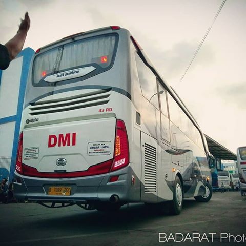
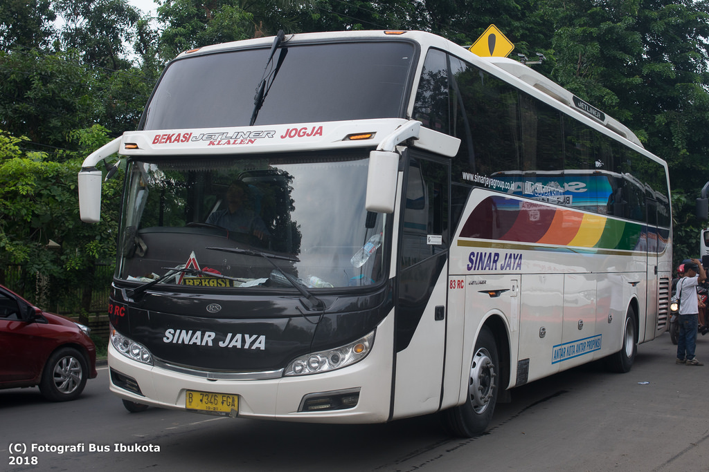
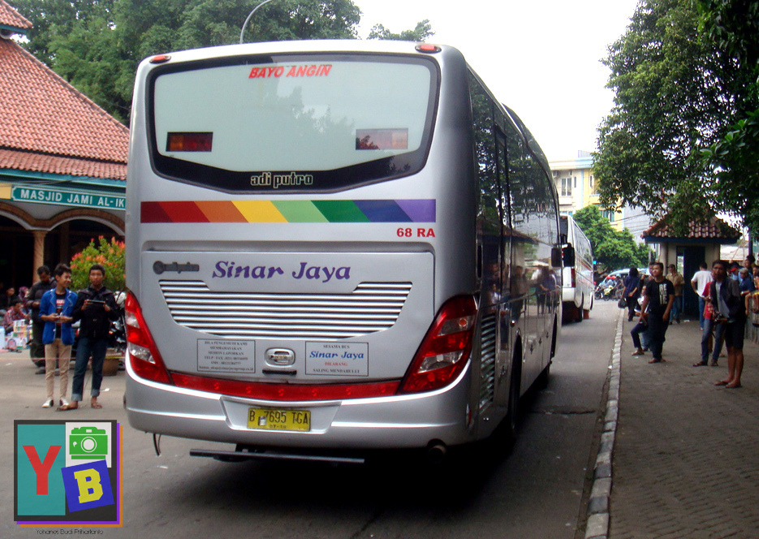
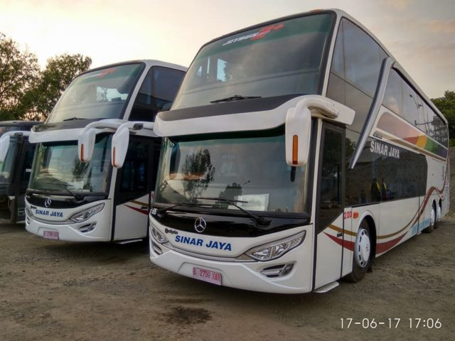

Profil
1. Generasi Pertama Sinar Jaya
Karoseri = Adi Putro
Merk Mesin = Hino RG 82
Tanggal Diluncurkan = 6 Februari 1983
Melayani Trayek = Antar Kota Antar Propinsi Jakarta - Jawa Barat - Jawa Tengah

2. Generasi Sinar Jaya Pariwisata
Karoseri = Adi Putro
Merk Mesin : Hino AK 280
Tanggal Diluncurkan : 6 Februari 2001
Melayani Trayek : Sesuai Dengan Keinginan (Pariwisata)

3. Sinar Jaya DMI
Karoseri = Adi Putro
Merk Mesin : Hino RK 285
Tanggal Diluncurkan : 6 Februari 2007
Melayani Trayek : Bantuan Arus Mudik 2007 Jawa Tengah
4. Sinar Jaya New Regeneration
Karoseri = Adi Putro
Merk Mesin : Hino RN 285
Tanggal Diluncurkan : 6 Februari 2014
Melayani Trayek : Jabodetabek - Jawa Tengah
Foto Armada


